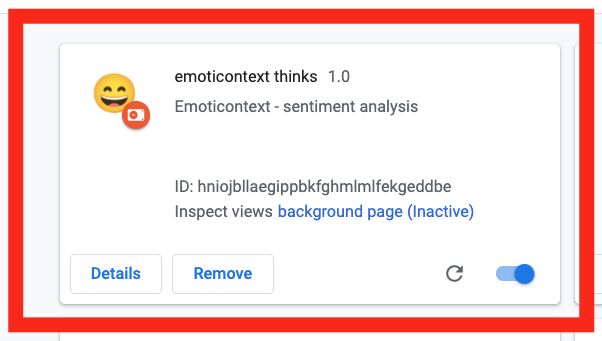

hello world!
I'm Devashni Priyadarshni. A data analyst turned software engineer and a recent Hackbright graduate looking for an opportunity to hone my skills as a coder, learn and grow.
About Me
I'm a multi-disciplinary professional with a background in media and communications, an MBA in Information Systems and Marketing, 3+ years of data analysis experience delivering actionable insight to consumer goods giants like The Clorox Company in CA and Danone in NY. Before transitioning to data, I founded an e-commerce store and worked for startups.
My non-linear career is the result of constant learning and looking for more challenging problems to solve and I've learned a lot along the way. Journalism taught me to ask questions, marketing taught me to explore different perspectives, and data analysis made thinking critically and analytically a second nature.
In 2020, I decided to learn Python, hoping to move to data science. My reasons to start coding were similar to most people’s – to acquire a new skill set, to challenge myself and my learning ability, and potentially get a job in tech with good benefits, flexibility, and growth opportunities. However, from the moment I solved my first programming problem something clicked. I realized coding was the missing puzzle piece I'd been looking for in my career.
Since then, I've completed Hackbright's software engineering program for women built a full-stack web-app called Mockingbird (an algorithm visualizer), participated in hackathons and am really excited about finally having found something that I truly am passionate about and building a career in it.
Skills
Project
Mockingbird
The Mockingbird web app uses a Markov chain based text generation algorithm to generate random believable sentences mimicking the style of the original author. The ‘source text’ can be pulled from live tweets off Twitter for up to two different sources or selected from the app database. Sentences based on one person’s tweets can be entertaining but throwing in interesting personalities to the mix can produce compelling and often hilarious results.
Users can enable or disable visualization of the steps of the text generation algorithm, change visualization speed, save generated text and create word clouds to analyze and compare tweets/text (including emojis!) from multiple authors. Use it for fun or use it for education!
Emoticontext
Emoticontext is a browser extension that uses the Google Cloud Natural Language API to analyze the sentiment of a given webpage. Emoticontext uses icons to tell you about your webpage's sentiment score and alerts you if you're reading an article that's highly negative or otherwise emotionally charged.
Its goal is to help people stay mentally healthy by allowing them to be more intentional about the content they consume.